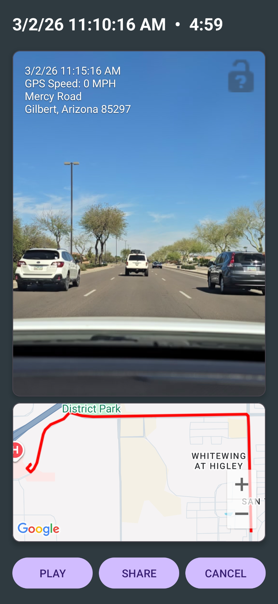
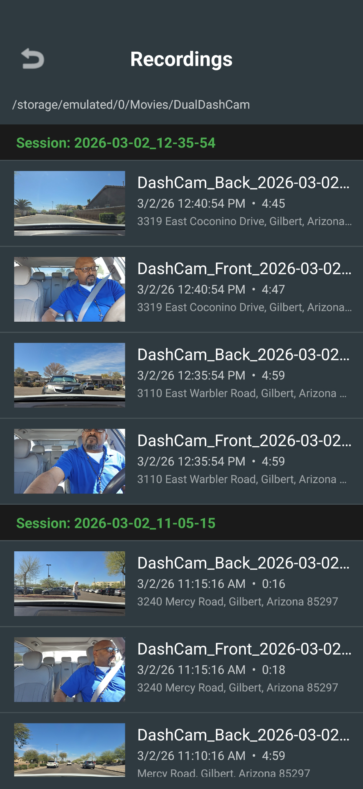
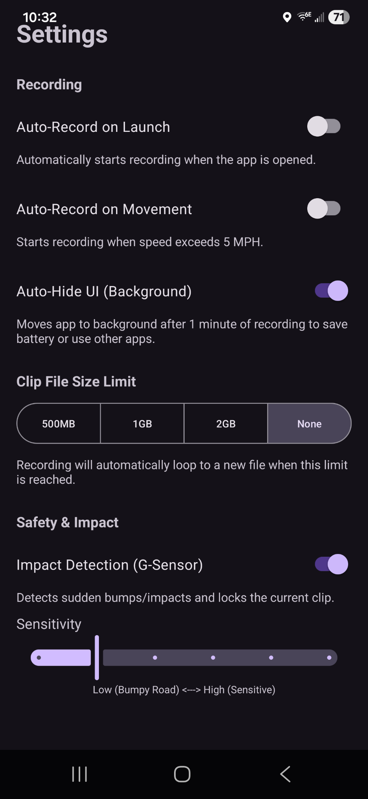

Road + cabin coverage
Capture the forward road view and interior cabin view when your device supports dual-camera operation.
Guardian Dual Dash Cam helps rideshare drivers, commuters, and travelers document the road ahead and the cabin interior with optional audio, trip data, collision detection, and simple sharing.
Guardian is designed for real driving situations where accidents, disputes, passenger safety, or travel documentation can benefit from clear video evidence.
Capture the forward road view and interior cabin view when your device supports dual-camera operation.
Record helpful travel context such as speed, street information, date, time, and location-based trip details.
Impact detection can help preserve important moments so they are easier to find after an incident.
Loop recording and automatic deletion of older clips help reduce device storage use during long drives.
Your recordings and trip data stay on your device unless you choose to share them.
Share important clips with an insurance agent, law enforcement, or a trusted contact when needed.
See Guardian Dual Dash Cam in action with playback, recordings, and settings screens from the app.



Whether you drive passengers, commute daily, document road trips, or want extra confidence after a fender bender, Guardian helps keep important video available on your device.
Because Guardian can use both cameras, optional audio, location, and trip overlays, your device may get warm during extended use. Keep the device out of direct sunlight when possible and consider aiming an air-conditioning vent toward the device during long drives.